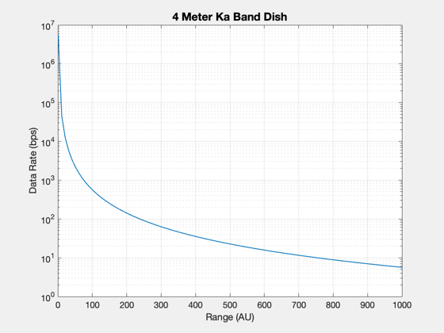
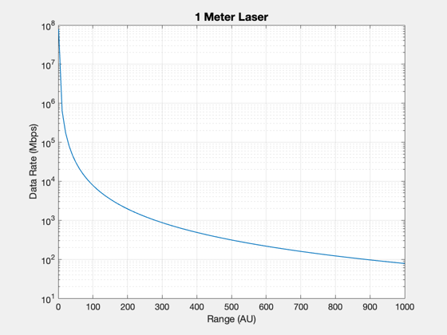

Contents
Data Rate at the Solar Gravitation Lens
aU = Constant('au');
range = linspace(1,1000);
d = DataRate;
40 GHz: ka-band
d.fGHz = 40;
d.areaTransmit = 4*pi;
str = '4 Meter Ka Band Dish';
power = 1e6;
dataRate = zeros(1,length(range));
for k = 1:length(range)
d.range = range(k)*aU*1000;
dataRate(k) = DataRate(power,d);
end
h1 = Plot2D(range,dataRate,'Range (AU)', 'Data Rate (bps)', str,'ylog');

420e3 GHz: laser
d.fGHz = 420e3;
d.areaTransmit = pi;
str = '1 Meter Laser';
power = 0.5e6;
for k = 1:length(range)
d.range = range(k)*aU*1000;
dataRate(k) = DataRate(power,d);
end
h2 = Plot2D(range,dataRate/1e6,'Range (AU)', 'Data Rate (Mbps)', str,'ylog');
if 0
PrintFig(1,4,h1,'KaDataRateSGL')
PrintFig(1,4,h2,'LaserDataRateSGL')
end
